We present Portals, a deployed systems architecture that bridges 4D world-model research and persistent spatial experiences on phones, smart glasses, and augmented-reality headsets. The defining shift in spatial computing is not from 3D to 4D, but from stateless scenes to stateful worlds—scenes that persist, compound, and stay editable across sessions, devices, and users. Delivering such worlds on constrained hardware is the central systems problem: they must render in real time, survive revisits, and remain authorable through voice, gesture, and no-code tools. Built on 3D Gaussian Splatting and informed by 4D-GS and Generalizable Human Gaussians, Portals has been deployed on iOS, with web-based viewers (including Apple Vision Pro) for reconstructed environments, volumetric humans, and holographic spatial media. We contribute: (1) an edge-device runtime built around LOD-adaptive Gaussian splatting (SPAG) and a shared spatial-media compute substrate that fuses depth, stencil, audio, and ML-pose channels, driving 360+ source-agnostic VFX effects at 60 fps on iPhone 14 Pro (2.7–4.1× speedup); (2) a persistent geospatial scene-state architecture with layered world metadata, reloadable scene payloads, and anchor-guided re-alignment across sessions; (3) a creator-facing composition pipeline that bridges reconstruction and generation through VFX composition, voice-driven semantic actions (with on-device intent parsing and cloud fallback for ambiguous utterances), and no-code authoring; and (4) benchmark axes for evaluating 4D world models under deployment constraints such as mobile rendering efficiency, persistent scenes, and editable world state. Prior clinical deployment of volumetric AR at Memorial Sloan Kettering established the real-time rendering primitives underlying this work.
Selected footage captured on device (iPhone 15 Pro, iPad Pro, Apple Vision Pro). Download MP4.
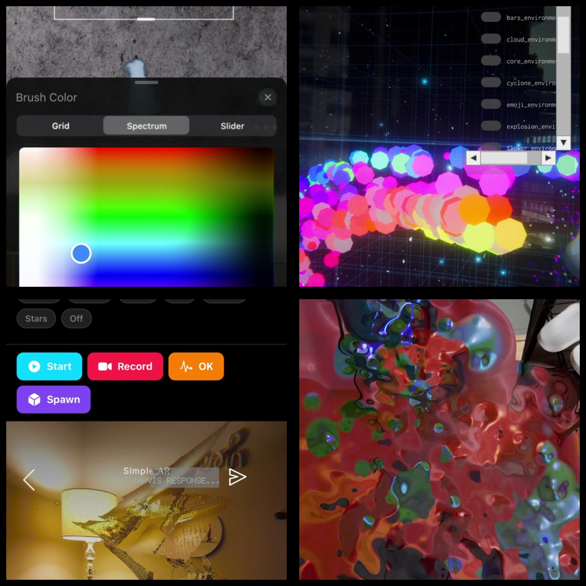
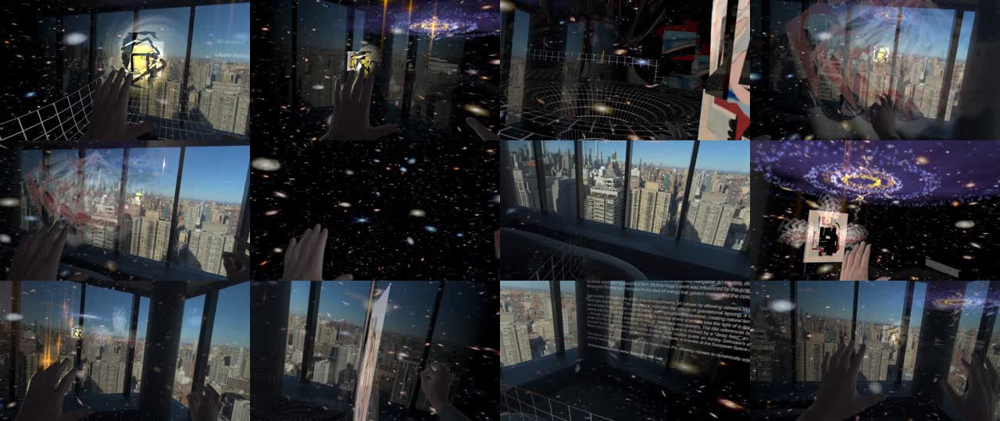
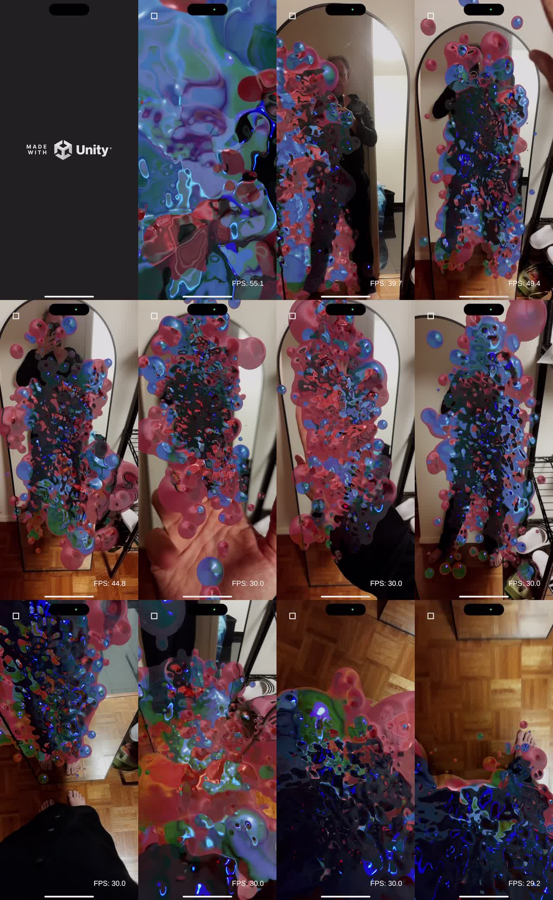
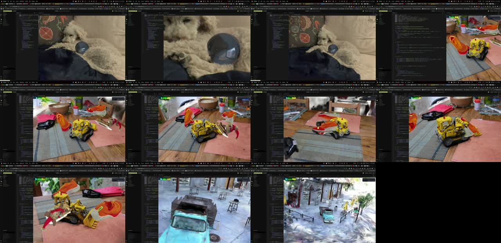
All imagery captured on physical devices — iPhone 15 Pro, iPad Pro, and Apple Vision Pro.
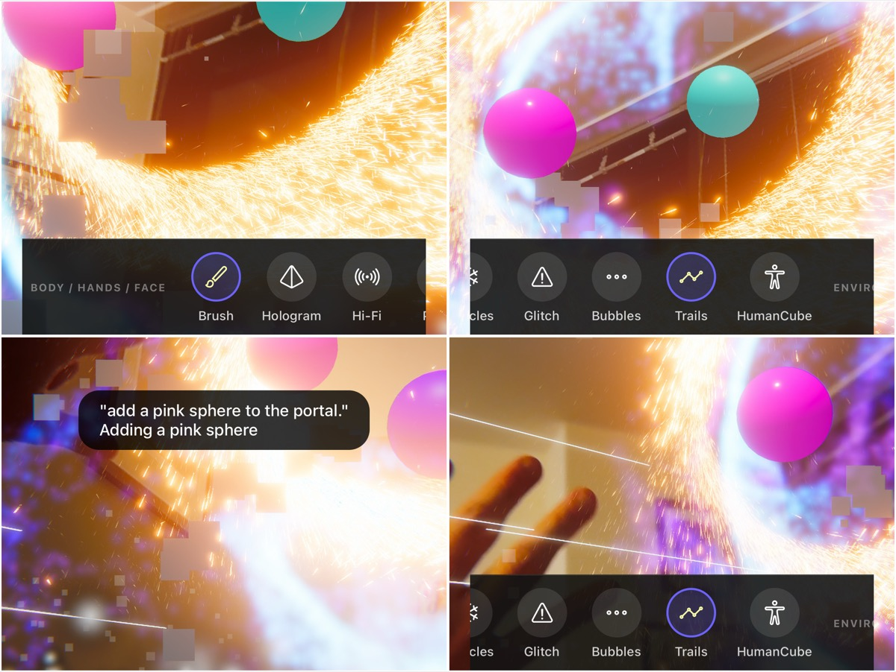
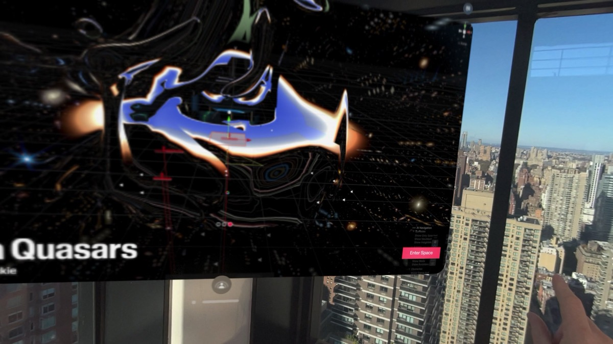
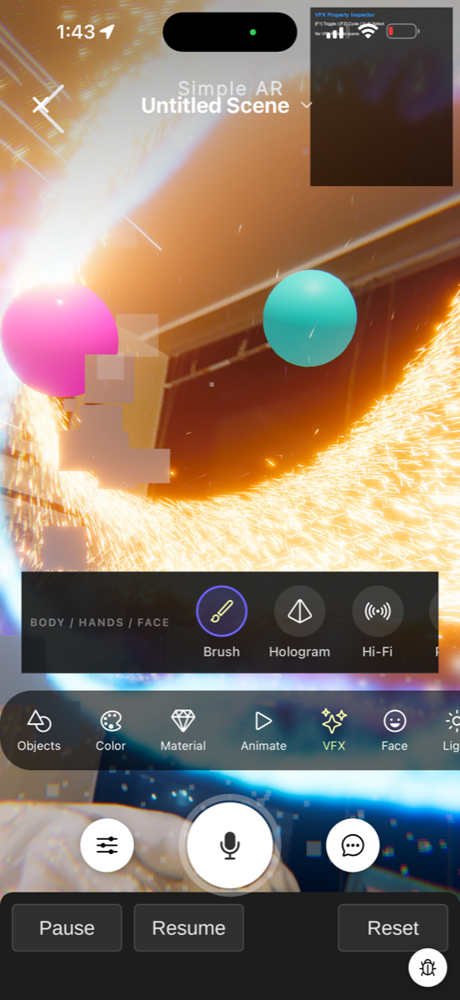
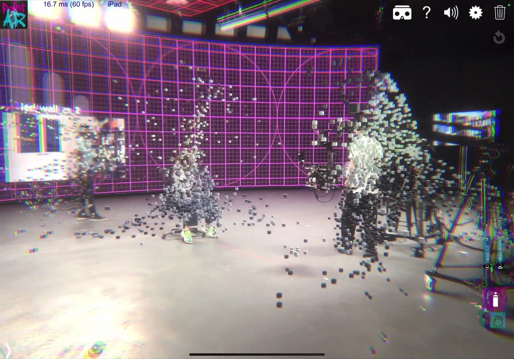
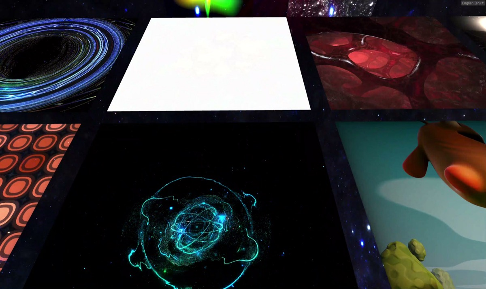
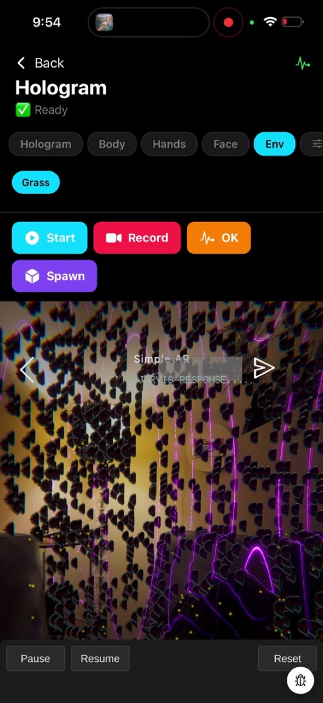
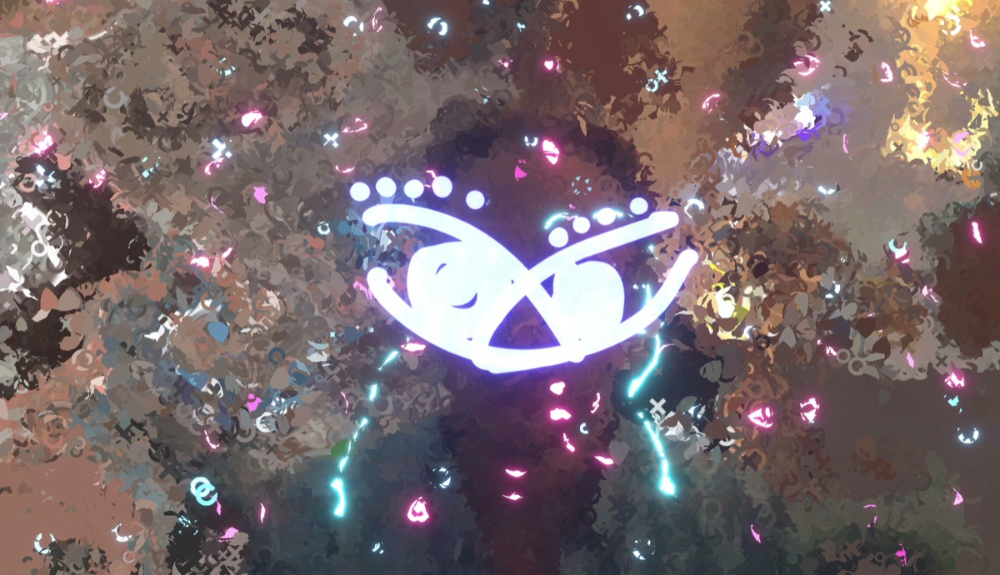
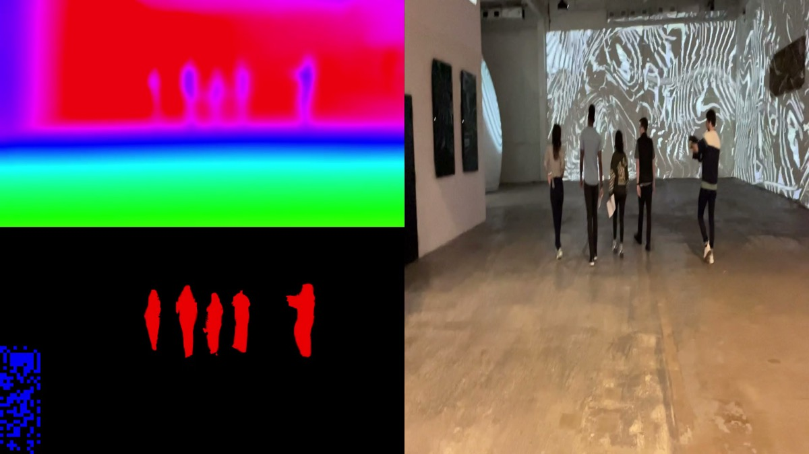
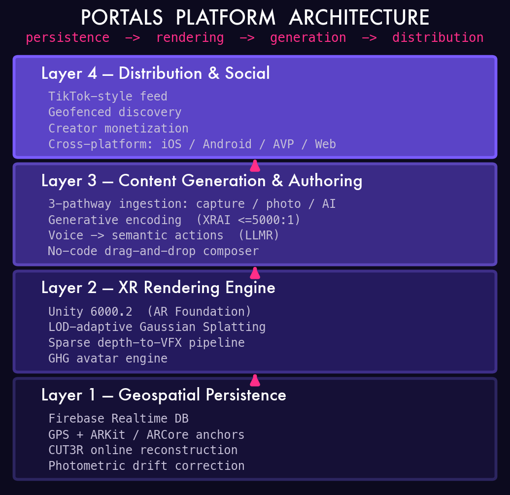
System architecture showing the persistent world stack, shared spatial-media substrate, and deployment surfaces across mobile, headset, and web clients.
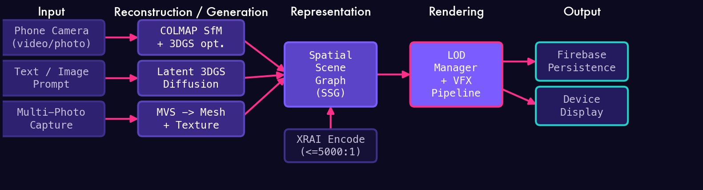
Content pipeline across capture, reconstruction, editing, and deployment. In the shipped system, asset ingestion centers on phone capture, photogrammetry, and text or reference-image generation, while voice, direct manipulation, and no-code controls act as authoring surfaces over the same persistent scene graph.
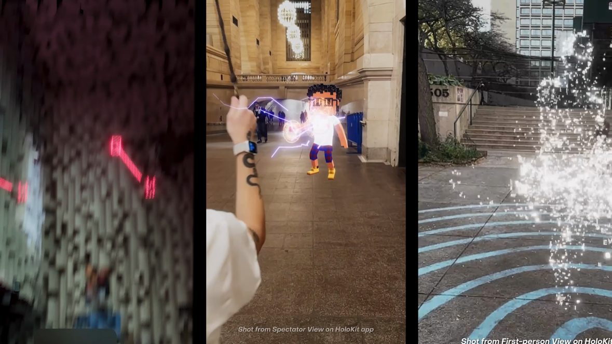
Model and representation diagrams summarizing how environments, volumetric humans, and spatial media fit into the same editable 4D world framework.
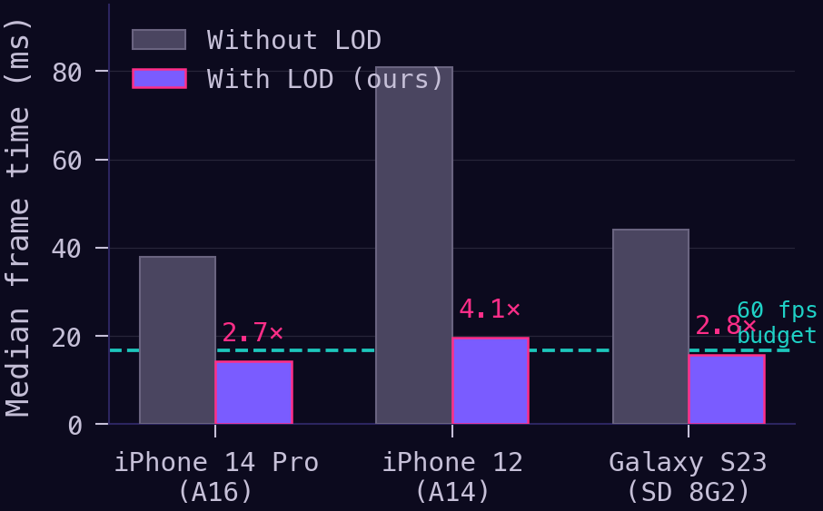
Level-of-detail and performance figure highlighting mobile-first runtime constraints and the efficiency tradeoffs required for edge deployment.
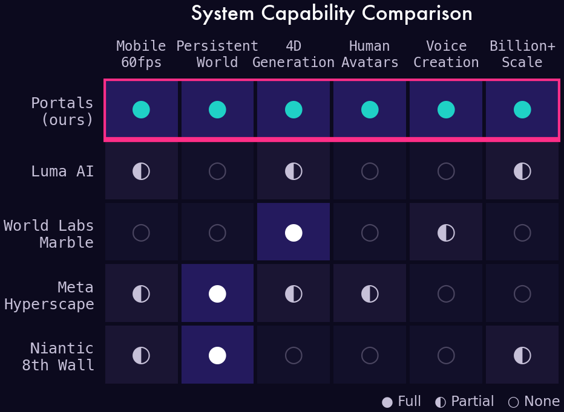
Comparison of Portals against prior systems along persistence, editability, and deployment-relevant world-model axes.
The paper linked above is the accepted camera-ready submitted to the CVPR 2026 Workshop on 4D World Models (Bridging Generation and Reconstruction), certified by IEEE PDF eXpress on April 11, 2026. The interactive web demo, code release, and expanded project materials will follow after the workshop.